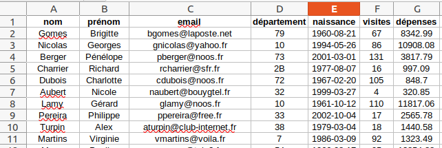
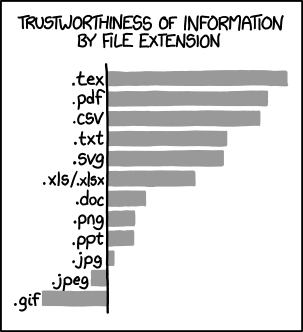

- Crédits
- Table de données
- Échange de table de données avec un fichier CSV
- Manipulation de fichiers CSV en Python
- Synthèse CSV](#échange-de-table-de-données-avec-un-fichier-csv)
- Manipulation de fichiers CSV en Python
- Synthèse
Crédits⚓︎
Ce cours est largement inspiré de deux sources :
- le chapitre 15 du manuel NSI de la collection Tortue chez Ellipse, auteurs : Ballabonski, Conchon, Filliatre, N’Guyen ;
- le cours de Julien de Villèle.
Table de données⚓︎
Histoire 1
L'homme organisait les données sous forme de tableau bien avant l'invention de l'ordinateur : les données tabulaires ou tables de données, apparaissent déjà dans les livres de compte de l'Égypte ancienne. De nos jours les relevés de comptes bancaires sont encore présentés sous forme de tableaux avec pour chaque opération sa date, sa nature (débit ou crédit) et son montant.
En informatique, les tables de données se sont développées dans dans les années 1970 avec l'essor des Systèmes de Gestion de Base de Données s'appuyant sur le modèle relationnel proposé par Edgar F. Codd chez IBM. Les Systèmes de Gestion de Base de Données permettent aujourd'hui le traitement automatique de gigantesques bases de données, qui est un élément fondamental dans nos sociétés de l'information.
Les Systèmes de Gestion de Base de Données seront étudiés en classe de terminale. Nous présenterons cette année les traitements de tables de données qui peuvent être effectués à l'aide de scripts Python, ce qui couvre déjà un large champ de besoins en data science, bio-informatique, informatique financière ou de gestion ...
Définition 1
Une feuille de tableur est un modèle de données tabulaires ou table de données.
Définissons le vocabulaire :
-
Une table, représentée sous forme de tableau, est une collection d'éléments qui sont les lignes du tableau.
-
Chaque élément de la table, ou ligne de sa représentation sous forme de tableau, s'appelle un enregistrement.
-
Tous les enregistrements d'une même table sont des p-uplets nommés qui partagent les mêmes descripteurs, appelés aussi attributs. Dans une représentation de la table sous forme de tableau, chaque attribut correspond à une colonne. Chaque attribut est caractérisé par son type et son domaine de valeurs.
-
Dans une représentation sous forme de tableau, les descripteurs ou attributs sont en général placés comme en-tête de colonnes sur la première ligne.

Exemple 1
La table représentée ci-dessus rassemble les enregistrements des clients d'un site web marchand. Les attributs de cette table sont :
- le nom et le prénom du client de type chaîne de caractères
- l'adresse mail du client du type chaîne de caractères avec un domaine de valeurs particulier
- le département du client du type chaîne de caractères avec un domaine de valeurs particulier
- le nombre de visites du client de type entier avec pour domaine de valeurs les entiers positifs
- les dépenses du client de type flottant avec pour domaine de valeurs les flottants positifs
Échange de table de données avec un fichier CSV⚓︎
Point de cours 1
Pour échanger des données tabulaires entre les programmes qui doivent les manipuler, on les exporte puis les importe sous la forme de fichiers textes, c'est-à-dire lisibles par l'être humain.
Afin d'assurer l'interopérabilité entre différents programmes, un fichier doit respecter un format normalisé.
L'un des formats les plus répandus pour l'échange de données tabulaires est le format CSV pour Comma Separated Values :
- un fichier CSV est un fichier texte donc éditable avec un éditeur de textes comme Notepad++ ;
- chaque ligne du fichier correspond à un enregistrement de la table
- pour un enregistrement donné, les valeurs des différents attributs sont séparées en champs par un délimiteur qui est en général l'un des symboles
,ou;ou:. - la première ligne contient en général les noms des attributs.
- les champs peuvent être délimités par des guillemets droits
"s'ils contiennent du texte avec des espaces ou des sauts de ligne. Le caractère"est alors échappé en""pour le distinguer des guillemets droits délimiteurs.
Voici un extrait d'un fichier CSV correspondant à la table présentée dans l'exemple 1 :
nom,prénom,email,département,naissance,visites,dépenses
Gomes,Brigitte,bgomes@laposte.net,79,1960-08-21,67,8342.99
Nicolas,Georges,gnicolas@yahoo.fr,10,1994-05-26,86,10908.08
Berger,Pénélope,pberger@noos.fr,73,2001-03-01,131,3817.79
Charrier,Richard,rcharrier@sfr.fr,2B,1977-08-07,16,997.09
On donne ci-dessous un autre extrait de fichier CSV qui est un export de fichier d'identifiants de l'Espace Numérique de Travail (avec valeurs modifiées). La table comporte 19 attributs de rne à pays listés sur la première ligne. Le premier enregistrement figure sur la deuxième ligne avec pour valeur du premier champ 0690026D et sept champs vides à la fin.
On observe que le délimiteur de champ est le symbole ;, que les champs peuvent contenir des espaces, que certains sont vides et que le nombre de champs pour le premier enregistrement ne correspond pas au nombre d'attributs ! On peut imaginer que pour traiter un tel fichier avec un programme, il faut d'abord analyser sa structure, ses particularités et prévoir d'éventuelles irrégularités dans les données (absence, erreurs de type, de saisie, corruption du fichier ...). Le contrôle de la validité des données doit donc être une composante du programme de traitement.
rne;uid;classe;profil;prenom;nom;login;mot de passe;cle de jointure;uid pere;uid mere;uid tuteur1;uid tuteur2;prenom enfant;nom enfant;adresse;code postal;ville;pays
0690026D;WKZ08710;813;Eleve;Mathieu;DUPONT;mathieu.dupont;>>>> Mot de passe déjà modifié par utilisateur >>>>;AC-LYON$3780909;WKZ02158;WKZ02171;;;;;;;;
Exercice 1
Questions type E3C
-
Dans la plupart des fichiers CSV, que contient la première ligne ?
- Réponse A : des notes concernant la table de données
- Réponse B : les sources des données
- Réponse C : les descripteurs des champs de la table de données
- Réponse D : l'auteur de la table de données
-
Laquelle de ces affirmations est vraie ?
- Réponse A : on ne peut accéder au contenu d'un fichier CSV que par l'intermédiaire d'un programme Python
- Réponse B : CSV est un format de chiffrement des données
- Réponse C : le format CSV a été conçu pour assurer la confidentialité d'une partie du code d'un programme
- Réponse D : les fichiers CSV sont composés de données séparées par des caractères comme des virgules
-
Qu'est-ce que le format de fichier CSV ?
- Réponse A : un format de fichier mis au point par Microsoft pour Excel
- Réponse B : un format de fichier pour décrire une base de données
- Réponse C : un format de fichier où les données sont séparées par un caractère tel qu'une virgule
- Réponse D : un format de fichier décrivant une page Web
Manipulation de fichiers CSV en Python⚓︎
Définition 2
L'indexation de table est la création d'une structure de données à partir de données tabulaires.
Nous allons présenter quelques méthodes d'indexation de table extraite d'un fichier CSV vers une structure de données du langage Python : tableau de tableaux ou tableau de dictionnaires que nous privilégierons.
Dans cette section, on considère le fichier
CSV,
clients_mini.csv, représentant un extrait de la table de l’exemple 1
avec les enregistrements de 20 clients d’un site web marchand.
Méthode 1
Présentons deux méthodes de lecture de fichiers CSV qui utilisent les outils standards de Python.
On fait les hypothèses suivantes : la première ligne du fichier contient les attributs
et on connaît le délimiteur, ici le symbole ,.
- Lecture
On peut extraire les attributs et la table contenus dans le fichier clients_mini.csv avec le code ci-dessous :
fichier = open('clients_mini.csv', encoding = 'utf8', newline = '') #ouverture du fichier
attributs = fichier.readline().rstrip().split(',') #extraction de la ligne des attributs
table = [ligne.rstrip().split(',') for ligne in fichier] #extraction des autres lignes
fichier.close() #fermeture du fichier
La méthode open permet de créer un objet fichier qu'on peut parcourir ligne par ligne avec un curseur : d'abord la première ligne avec fichier.readline() puis les lignes suivantes en itérant sur fichier. Il est important de préciser l'encodage du fichier, par défaut c'est celui du système d'exploitation.
Chaque ligne est une chaîne de caractères découpée en liste de champs selon le délimiteur passé en paramètre à la méthode split. Le caractère de saut de lignes a d'abord été supprimé avec la méthode rstrip.
On récupère ainsi les attributs comme un tableau de type list et la table comme un tableau d'enregistrements qui sont eux-mêmes des tableaux. Notons que toutes les valeurs sont des chaînes de caractères et qu'il faudra convertir certaines pour les traiter !
>>> attributs #tableau des attributs
['nom', 'prénom', 'email', 'département', 'naissance', 'visites', 'dépenses']
>>> table[0] #tableau premier enregistrement
['Gomes', 'Brigitte', 'bgomes@laposte.net', '79', '1960-08-21', '67', '8342.99']
>>> table[:2] #tableau de tableaux : extrait
[['Gomes', 'Brigitte', 'bgomes@laposte.net', '79', '1960-08-21', '67', '8342.99'], ['Nicolas', 'Georges', 'gnicolas@yahoo.fr', '10', '1994-05-26', '86', '10908.08']]
- Écriture
On peut ensuite recopier les attributs et la table dans un autre fichier clients_mini_copie.csv avec le code ci-dessous :
g = open('clients_mini_copie.csv', encoding = 'utf8', newline = '')
premiere_ligne = ','.join(attributs) + '\n'
g.write(premiere_ligne)
for enregistrement in table:
g.write(','.join(enregistrement) + '\n')
g.close()
La méthode join permet de concaténer les éléments d'un tableau de chaînes de caractères avec un délimiteur.
- Avec ces méthodes, une table est donc représentée par un tableau de tableaux. On accède à un enregistrement par son index dans la table et à la valeur d'un attribut par son index dans le tableau des attributs (séparé de la table). C'est incommode et le code produit est peu lisible. Ainsi, pour accéder à l'adresse mail du premier enregistrement il faut saisir
table[0][2]. On aimerait écriretable[0]['email']. Pour cela, chaque enregistrement devrait être un dictionnaire avec pour clefs les attributs de la table. C'est possible en utilisant le modulecsv.
Méthode 2
Le module csv est disponible dans la bibliothèque standard et peut donc être utilisé sans installation spécifique. À partir de la table contenu dans le même fichier CSV 'clients_mini.csv', ce module permet de créer une structure de données d'un accès plus facile.
- Lecture
Le code ci-dessous permet d'extraire directement la table d'un fichier CSV dans une structure de données qui est un tableau de dictionnaires : chaque enregistrement est un dictionnaire dont les clefs sont les attributs listés sur la première ligne du fichier.
Pour les versions de Python 3.6 et 3.7 uniquement, les dictionnaires renvoyés sont spécifiques, de type OrderedDict, et on prendra soin de les convertir en dictionnaires standard avec dict.
import csv # import du module
f = open('clients_mini.csv', mode = 'r', encoding = 'utf8', newline = '')
reader = csv.DictReader(f, delimiter = ',') #création d'un objet reader
table = [dict(enregistrement) for enregistrement in reader]
f.close()
La structure de données représentant la table est un tableau de dictionnaires : l'accès aux enregistrements se fait par index et à leurs attributs par clef : très efficace (coût constant) et code lisible. Notons que toutes les valeurs restent des chaînes de caractères et qu'il faudra convertir certaines pour les traiter !
>>> table[0] #premier enregistrement de type dictionnaire
{'nom': 'Gomes', 'prénom': 'Brigitte', 'email': 'bgomes@laposte.net', 'département': '79', 'naissance': '1960-08-21', 'visites': '67', 'dépenses': '8342.99'}
>>> table[:2] # tableu de dictionnaires : extrait
[{'nom': 'Gomes', 'prénom': 'Brigitte', 'email': 'bgomes@laposte.net', 'département': '79', 'naissance': '1960-08-21', 'visites': '67', 'dépenses': '8342.99'}, {'nom': 'Nicolas', 'prénom': 'Georges', 'email': 'gnicolas@yahoo.fr', 'département': '10', 'naissance': '1994-05-26', 'visites': '86', 'dépenses': '10908.08'}]
>>> len(table)
20
>>> table[0]['email'] #accès facile aux valeurs des attibuts par clefs
'bgomes@laposte.net'
- Écriture
L'écriture d'un tableau de dictionnaires partageant les mêmes clefs sous forme de table dans un fichier CSV, s'effectue de façon symétrique à travers un objet DictWriter. À titre, d'exemple, on recopie la table extraite précédemment dans un autre fichier CSV. Depuis Python 3.7, le parcours des clefs d'un dictionnaire est garanti dans le même ordre que celui d'insertion donc on peut récupérer la liste des attributs avec list(table[0].keys())
g = open('clients_mini_copie2.csv', mode = 'w', encoding = 'utf8', newline = '')
attributs = list(table[0].keys())
writer = csv.DictWriter(g, delimiter = ',', fieldnames = attributs) #création de l'objet writer
writer.writeheader() #écriture des attributs
for enregistrement in table:
writer.writerow(enregistrement) #écriture des enregistrements
g.close()
- Remarque
Le module csv permet aussi d'extraire une table d'un fichier CSV sous forme de tableau de tableaux comme dans la méthode précédente. Le découpage des lignes/enregistrements selon le délimiteur est intégré ce qui simplifie le code.
f = open('clients_mini.csv', mode = 'r', encoding = 'utf8', newline='')
reader = csv.reader(f, delimiter = ',')
table = [ligne for ligne in reader]
f.close()
Exercice 2
Le fichier clients_avec_erreurs.csv contient une table de la même structure que celle de l'exemple 1 mais avec des données invalides :
- pour l'attribut
'email': format incorrect ou adresse manquante - pour l'attribut
'département': valeur incorrecte - pour l'attribut
'naissance': année hors postérieure à 2005 (pas de clients de moins de 15 ans !), mois hors de la plage [1,12], jour hors de la plage possible pour l'année et le mois fixé. - pour les attributs :
'visites'et 'dépenses' : valeurs négatives
L'objectif de cet exercice est d'extraire la table du fichier, de filtrer les enregistrements valides et de les recopier dans un fichier 'clients_sans_erreurs.csv'.
- Ouvrir le fichier
cours_exercices_tables_eleve.pydans un IDE Python. -
Compléter les fonctions de lecture / écriture d'une table représentée par un tableau de dictionnaires vers un fichier CSV :
def lecture_csv(fichier, delimiteur): f = open(fichier, mode = 'r', encoding = 'utf8', newline = '') reader = csv.DictReader(f, delimiter = delimiteur) f.close() return table def ecriture_csv(table, fichier, delimiteur): g = open(fichier, mode = 'w', encoding = 'utf8', newline = '') attributs = list(table[0].keys()) writer = csv.DictWriter(g, delimiter = delimiteur, fieldnames = attributs) g.close() -
Compléter les fonctions
bissextile,valide_mois,valide_jourpuis la fonctionvalide_naissance.def bissextile(a): """Paramètre : a de type int représentant une année Valeur renvoyée : booléen indiquant si l'année est bissextile""" return ..... def valide_annee(j): return 1900 <= j <= 2005 def valide_mois(m): """Paramètre : m de type int représentant un mois Valeur renvoyée : booléen indiquant si le mois est valide (entre 1 et 12)""" return .... def valide_jour(a, m, j): """Paramètre : a, m, j de type int représentant l'année, le mois et le jour Valeur renvoyée : booléen indiquant si le jour est valide pour l'année et le mois donnés""" return .... def valide_naissance(date): """ Paramètre : date de type str au format 'année-mois-jour', ex: '2002-01-07' Valeur renvoyée : booléen indiquant si le jour est valide pour l'année et le mois donnés """ a, m, j = date.split('-') return ...... ...... -
Les fonctions
valide_email,valide_departement,valide_visitesetvalide_depensessont fournies, compléter la fonctionvalide_enregistrement:def valide_enregistrement(enreg): """ Paramètre : un enregistrement de type dictionnaire Valeur renvoyée : booléen indiquant si toutes les valeurs des attributs sont valides """ return ....................................................... ....................................................... ....................................................... -
Si un enregistrement extrait du fichier CSV est validé, on peut convertir les valeurs de ces attributs dans le type attendu pour effectuer un traitement :
intpour'visites'etfloatpour'dépenses'etstrpour les autres. Compléter la fonctionconversion_vers_tableci-dessous pour qu'elle renvoie une copie de l'enregistrement (de typedict) passé en paramètre avec les types attendus pour chaque attribut.def conversion_vers_table(enregistrement): return { 'nom' : enregistrement['nom'], 'prénom' : enregistrement['prénom'], 'email' : enregistrement['email'], 'département' : enregistrement['département'], 'naissance' : enregistrement['naissance'], 'visites' : ............................... , 'dépenses' : ............................... } -
On fournit également une fonction
conversion_vers_fichierréciproque de la précédente qui convertit les valeurs de touts les attributs d'un enregistrement en typestr, avant recopie de la table dans un fichier texte CSV. Compléter la fonctionmainci-dessous, avec un code client permettant de réaliser l'objectif fixé en préambule de l'exercice. Tester le code client pour vérifier les postconditions.def main(): """Code client""" #Traitement / validation / filtrage table = lecture_csv('clients_avec_erreurs.csv', ',') table_valide = [ ..................... for enregistrement in table if ................. ] #postconditions / tests assert len(table) == 1000 and len(table_valide) == 719 assert table_valide[0] == {'nom': 'Bailly', 'prénom': 'Aurélie', 'email': 'abailly1@gmail.com', 'département': '22', 'naissance': '1986-09-22', 'visites': 79, 'dépenses': 4389.47} table_valide_str = [conversion_vers_fichier(enregistrement) for enregistrement in table_valide] #écriture de la table validée ecriture_csv(table_valide_str, 'clients_sans_erreurs.csv', ',')
Exercice 3
Questions type E3C
-
On considère l'extraction suivante d'une base de données des départements français. Cette extraction a ensuite été sauvegardée dans un fichier texte.
"1","01","Ain","AIN","ain","A500" "2","02","Aisne","AISNE","aisne","A250" "3","03","Allier","ALLIER","allier","A460" "4","04","Alpes-de-Haute-Provence","ALPES-DE-HAUTE-PROVENCE","alpes-de-haute-provence","A412316152" "5","05","Hautes-Alpes","HAUTES-ALPES","hautes-alpes","H32412"On considère le code suivant :
import csv f = open('departements.csv', newline = '') lesLignes = csv.reader(f) for uneLigne in lesLignes: print(uneLigne[3]) f.close()Que va produire l'exécution de ce code ?
- Réponse A : L'affichage de la troisième colonne à savoir le nom du département avec une majuscule initiale
- Réponse B : L'affichage de tout le contenu du fichier
- Réponse C : L'affichage du nombre total de départements figurant dans le fichier
- Réponse D : L'affichage de la quatrième colonne, à savoir le nom du département tout en majuscules
-
On dispose du fichier
'info.csv'donné ci-dessous :nom, prenom, naissance, deces lovelace, ada, 1815, 1852 von neumann, john, 1903, 1957 turing, alan, 1912, 1954 mccarthy, john, 1927, 2011 floyd, robert, 1936, 2001Le programme ci-dessous nous permet de créer un tableau à partir de ce fichier.
file = open("info.csv", "r") firstLine = file.readline() # chargement de la ligne d'entête tableau = [line.split(',') for line in file] # chargement des donnéesLes index des lignes de ce tableau vont :
- Réponse A : de 0 à 3
- Réponse B : de 1 à 4
- Réponse C : de 0 à 4
- Réponse D : de 0 à 5
-
Quelle expression Python permet d'accéder au numéro de téléphone de Tournesol, sachant que le répertoire a été défini par l'affectation suivante :
repertoire = [ {'nom':'Dupont', 'tel':'5234'}, {'nom':'Tournesol', 'tel':'5248'}, {'nom':'Dupond','tel':'3452'}]- Réponse A :
repertoire['Tournesol'] - Réponse B :
repertoire['tel'][1] - Réponse C :
repertoire[1]['tel'] - Réponse D :
repertoire['Tournesol'][tel]
- Réponse A :
Synthèse⚓︎
Synthèse
Les tables de données sont très courantes : les données sont organisées en enregistrements (ligne du tableau) qui sont des p-uplets nommés partageant les mêmes attributs (entêtes de colonnes dans un tableau).
Les tables de données sont souvent stockées sous forme de fichiers CSV : ce sont des fichiers textes où les enregistrements sont des lignes dont les attributs sont séparés par un caractère délimiteur.
En Python, une table contenue dans un fichier CSV peut être représentée dans un tableau de tableaux ou plutôt un tableau de dictionnaires. Le module csv facilite les opérations d'importation et d'exportation de tables vers des fichiers CSV.
